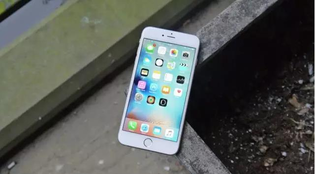

近日，美国科技网站BusinessInsider曝光了iPhone7最令人期待的特性，蓝宝石玻璃、无线充电、可更换电池和防水功能等榜上有名。一起来看看！
1、蓝宝石玻璃
蓝宝石比康宁大猩猩玻璃更耐划、更耐磨，之前有几个iPhone机型都采用了大猩猩玻璃。iPhone7屏幕材质升级以后，价格虽然会高一些，但用户心理上也能承受。只要耐摔耐刮，加点钱算什么！
2、双面插拔USB数据线
苹果将采用可双面插拔的Lightning数据线替换30针接口时，不少人欢呼雀跃。引入USB端双面插拔的数据线将可以改善iPhone用户体验，以后插USB线一次就插对，不用插三次才找准方向了。
3、无线充电
既然谈到充电这个话题，无线充电将成为iPhone7的一个重要卖点。这项技术其实已经存在，苹果只需面向更广泛的受众推出即可。
4、清晰度更高的屏幕
众所周知，iPhone6已经在屏幕上做出了重大升级，但苹果在这个方面仍然有改进的空间。鉴于苹果推出了更大屏幕的iPhone6 Plus，用户将会在它上面观看更多的视频，因此iPhone7屏幕会更大，清晰度会更高。以后电影都在iPhone7上看！
5、更好的电池续航，支持更换电池
iPhone6的电池续航能力可能超过了前几代iPhone,但用户始终希望iPhone电池续航更好，而且一直存在着这种需求。可更换电池是安卓手机用户长期以来调侃iPhone用户的话题之一。弹出式电池设计让用户更换电池变得轻而易举，同时还能延长iPhone的更新周期。苹果是时候考虑在iPhone7上增添这个功能了。
6、32GB存储版本
在iPhone6发布以后，心中只有一个疑问：32GB版本哪去了?苹果应该停止推出16GB版iPhone,让入门级型号具有32GB的存储容量，从而使大多数人可以在手机上保存足够多的音乐和照片。不少用户觉得16GB太小，64GB用不到，32GB刚刚好价格也适中，期待下一代会有。
7、更好的前置摄像头
更多女性用户使用iPhone之后，高品质自拍摄像头就比以前任何时候都重要了。苹果iPhone7很可能改善前置摄像头的质量，直到自拍照看上去像是由专业人士拍摄的一样。
8、更多的颜色选择
苹果始终对银色、灰色和金色等时髦的颜色情有独钟，但为何不推红色版iPhone呢?苹果应该拿出对待其智能手表的态度，也让iPhone7具有更多的颜色选择。
9、可定制Home键
Home键已经被用来与Siri对话，重新向用户显示主屏幕，但我们认为在一些特殊环境下，用户还可以用Home键来从事其他事情。如果按三下Home键就能打开“相机”应用，或是长按两下Home键就能打开微信，那种体验一定很酷。
10、防水功能
最后一个，如果iPhone7具有防水功能，那种感觉一定太奇妙了。三星智能手机已经具有了这种功能。很显然，支持防水功能不应该以牺牲iPhone时尚外形为代价，但却给果粉排队购买苹果新一代旗舰智能手机又增添了一个新的理由。